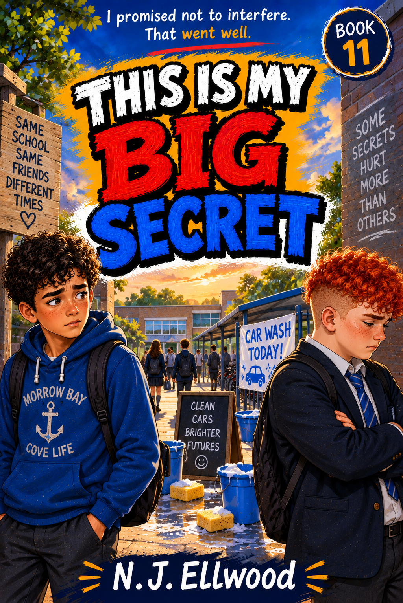

TTWORBYTES PRESENTS

This Is My Big Secret
“Alex is my best friend. Which is exactly why I know when he's hiding something.”
My name is Jake Morrow. I'm twelve years old.
THE STORY
One Best Friend. One Big Secret. One Difficult Promise.
A funny and emotional story about friendship, pride and discovering that helping someone is not always as simple as deciding what is best for them.
Jake knows Alex better than almost anyone. So when Alex starts behaving differently, Jake notices—even if Alex clearly does not want to explain why.
The truth is more serious than Jake expects. Alex's family is struggling, and Alex is doing everything he can to make sure his friends do not find out.
Jake immediately wants to help. The difficult part is finding a way to do it without embarrassing Alex, exposing something his friend wants kept private, or turning friendship into charity.
AT THE HEART OF THIS STORY
The Friend Behind the Jokes
Alex is usually the one making everyone laugh. This time, Jake realises the jokes are hiding something.
“If Alex needed help, he'd tell me. At least, that's what I kept telling myself.”
Jack has recovered enough to join the family holiday, although he still tires more easily than he once did. To Jake, simply having his brother beside him makes every ordinary moment feel important.
As the mystery unfolds, the brothers explore the town, follow clues and rediscover the easy closeness they had before illness changed everything.
The adventure may begin with a message in a bottle, but the real treasure is the chance for the family to feel whole again.
Meet the PeopleWHY THIS STORY MATTERS
Helping Without Hurting
Jake's first instinct is to fix things. Once he understands what Alex is hiding, doing nothing feels impossible.
But Alex has not asked to be rescued. He does not want his family's difficulties announced to everyone, and he certainly does not want to be treated differently by his friends.
That leaves Jake with a much harder problem than simply raising money. He has to work out how to help while respecting Alex's dignity, privacy and right to make his own choices.
At its heart, the story is about what friendship looks like when somebody you care about needs support but finds accepting it almost as difficult as asking for it.